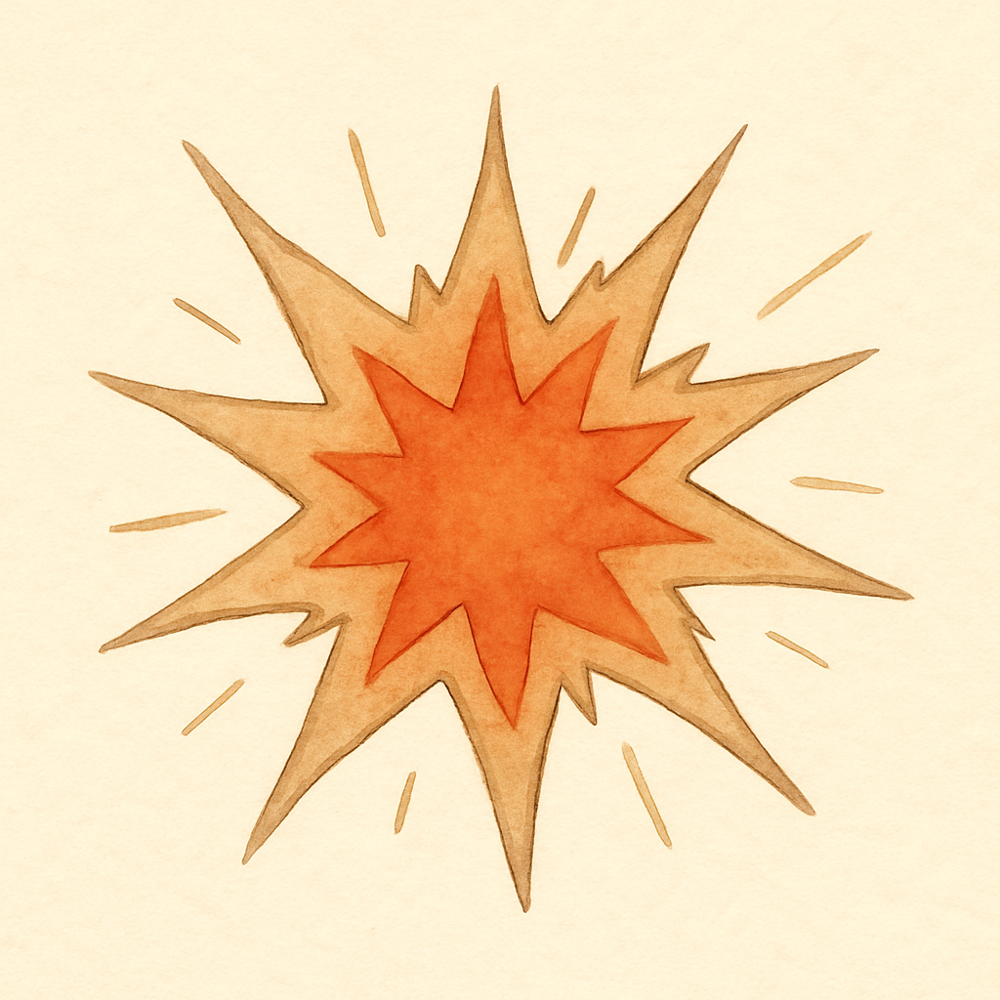
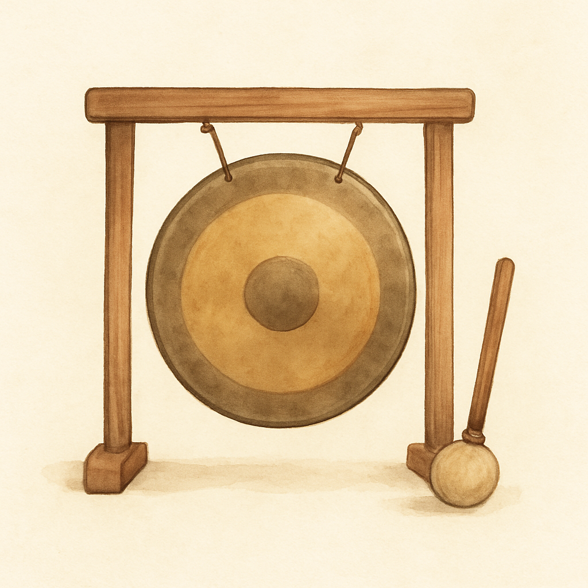
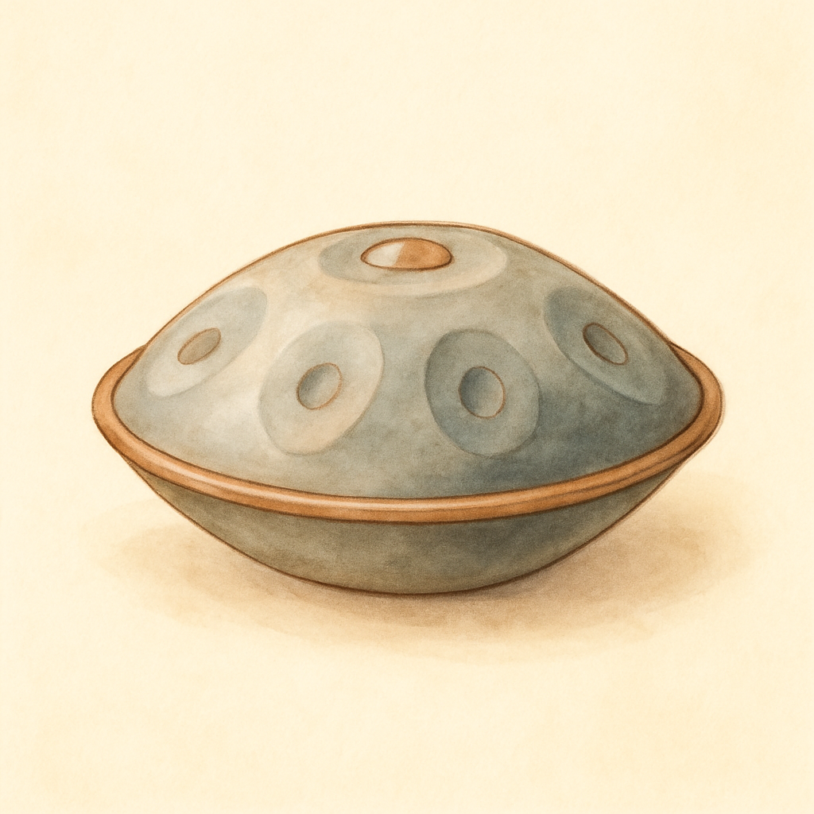
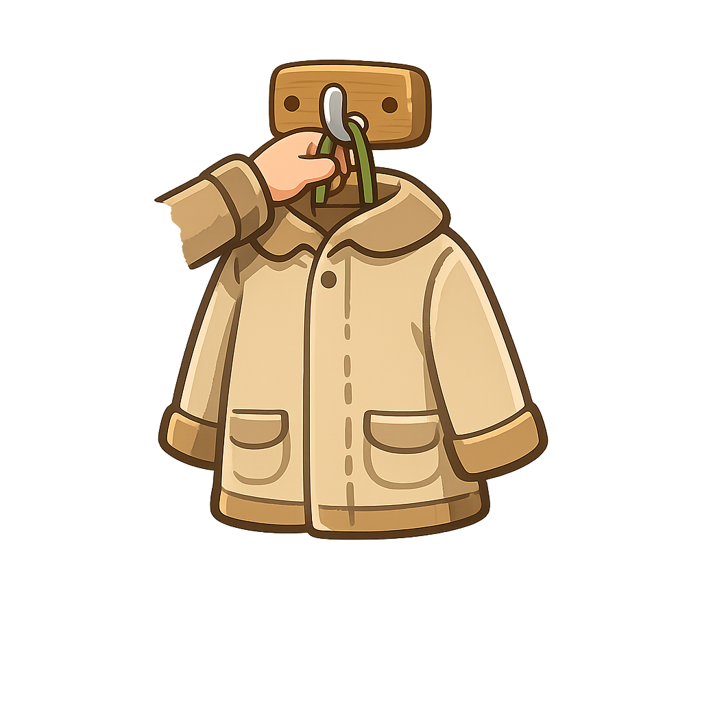
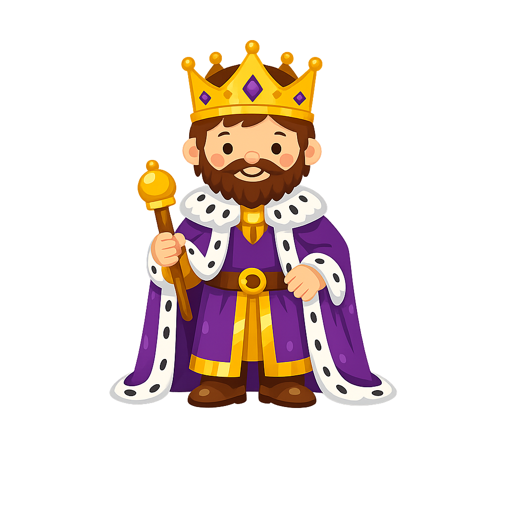
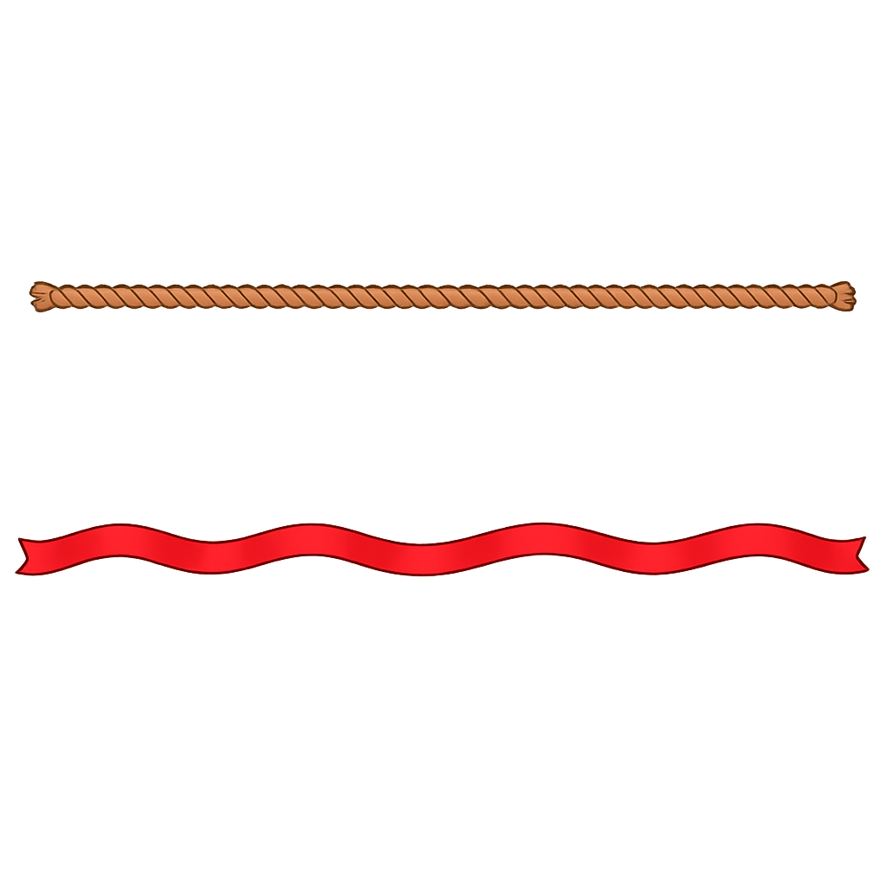
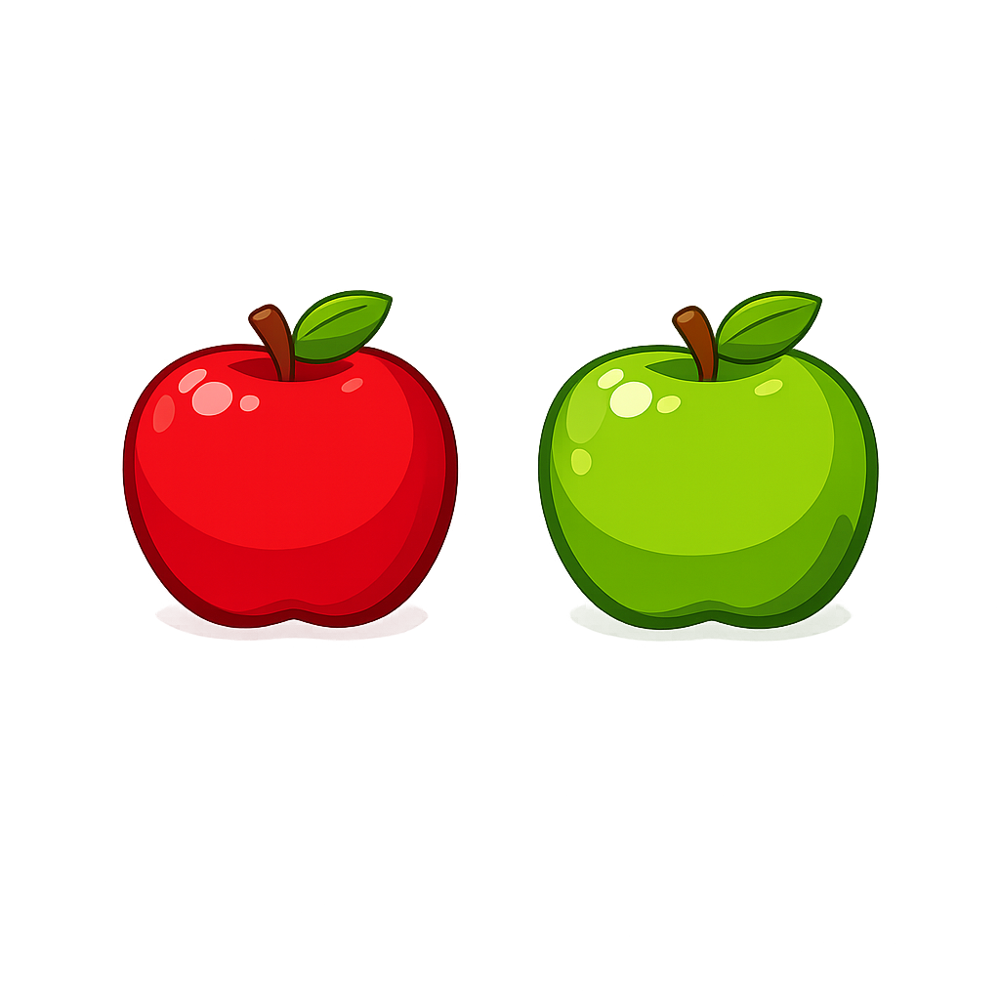
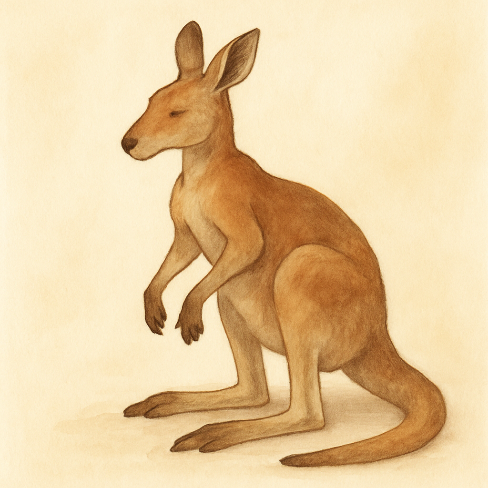
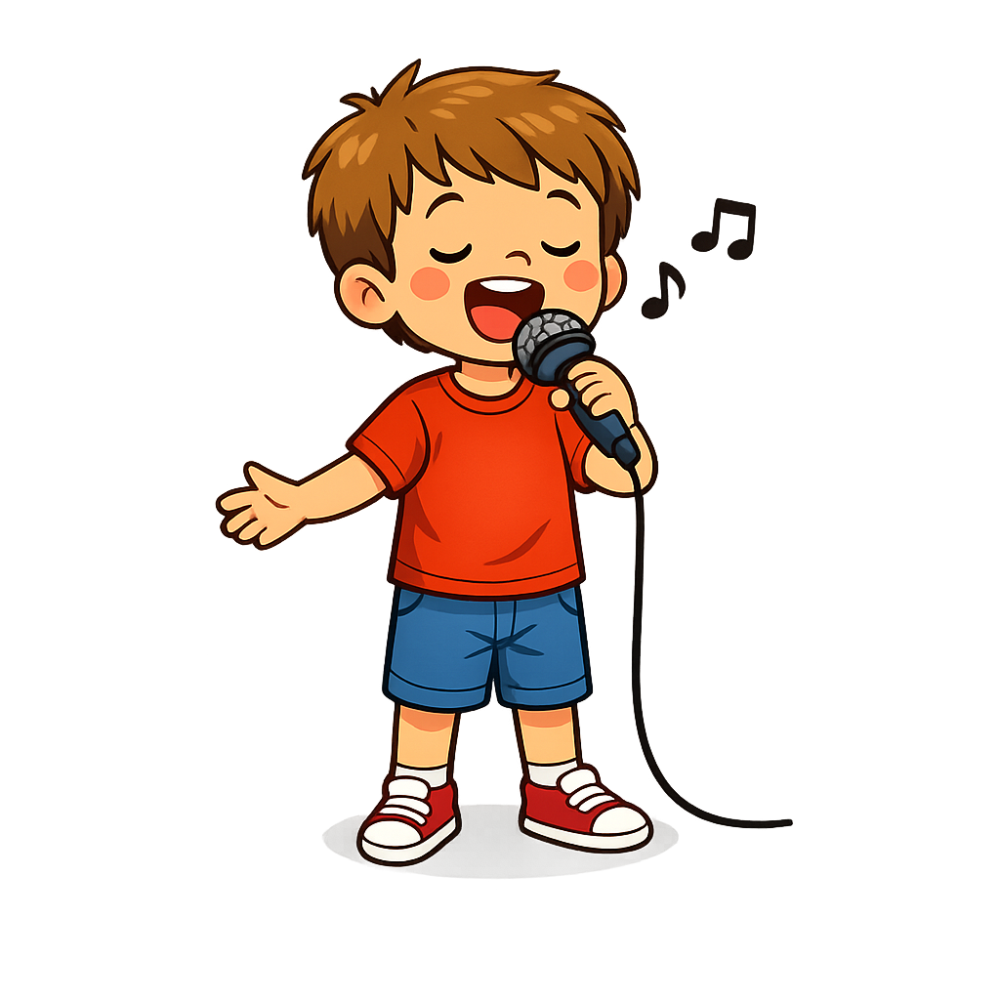
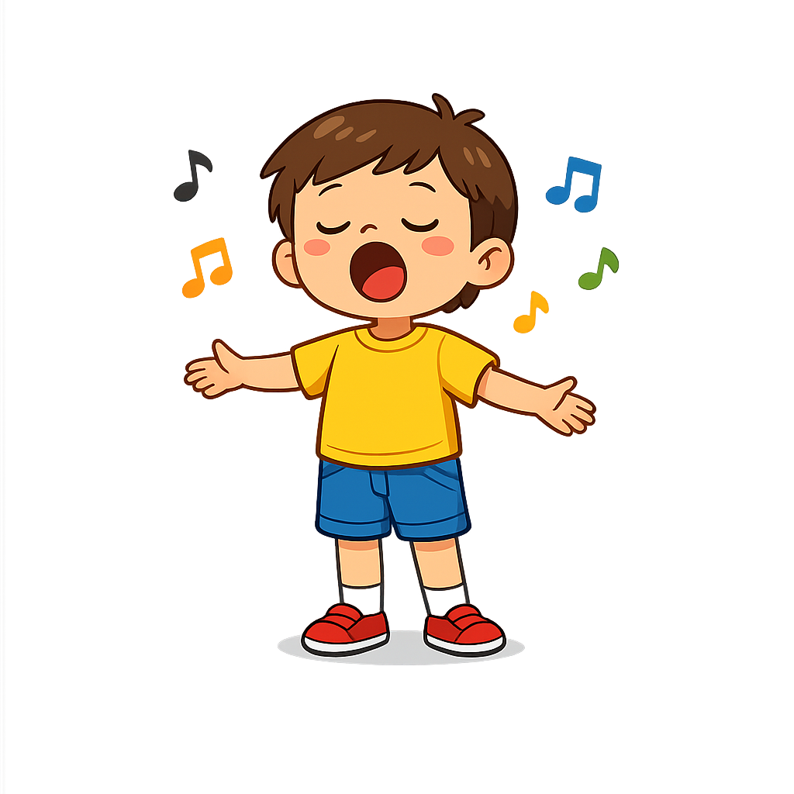

Human visual review only. Automated checks cannot reliably catch anatomy slop.
/media/learn/images/cycle-15/thumb.png
/media/learn/images/cycle-23/bang.png
/media/learn/images/cycle-23/gong.png
/media/learn/images/cycle-23/hang.png
/media/learn/images/cycle-23/hung.png
/media/learn/images/cycle-23/king.png
/media/learn/images/cycle-23/long.png/media/learn/images/cycle-23/only.png
/media/learn/images/cycle-23/other.png
/media/learn/images/cycle-23/rang.png/media/learn/images/cycle-23/ring.png/media/learn/images/cycle-23/rung.png/media/learn/images/cycle-23/sang.png
/media/learn/images/cycle-23/sing.png/media/learn/images/cycle-23/song.png
/media/learn/images/cycle-23/sung.png